数学抽象是对现实世界具有数量关系和空间形式的真实材料进行加工、提炼出共同的本质属性，用数学语言表达进而形成数学理论的过程。数学抽象思想是一般化的思想方法，对于培养人的抽象思维能力和理性精神具有重要的意义。
任何一个数学概念、法则、公式、规律、性质、定理等的概括和推导，都要用到抽象概括；用任何数学知识解决纯数学问题或联系实际的问题，都需要计算、推理、构建模型，都离不开抽象。
数学随着不断发展呈现出了逐步抽象的过程。例如，数的发展，从结绳记数得到1，2，3，…等有限的自然数，再通过加法的运算，得到后继数，形成了无限的正整数序列：1，2，3，…，n ，…在此基础上形成了正整数集合N。从整数扩展到分数，再从有理数扩展到实数，是逐步抽象的过程。再如从算术中的数（1、2、3等）到代数中的常量（a、b 等），再到函数中的变量（x、y 等），包括利用变量构建模型，也是一个逐步抽象的过程。
数学是研究数量关系和空间形式的科学，这种数量关系和空间形式是脱离了具体的事物的，是抽象的，因此，抽象思想在数学中无所不在。也就是说，只要有数学课堂教学，就应该有抽象思想的存在，只不过是呈现方式（目标达成的层次）不同而已。
学生认识数的过程伴随着整个义务教育甚至高中阶段，如前文所述，学生在学习0～10的认识时就开始与抽象思想打交道了，虽然学生并不完全理解0～10是经过对客观事物的数量多少进行抽象而得到的，但是能够体会到一个人、一个苹果、一支铅笔等都可以用1表示。当学生学习11～20的认识的时候，抽象的层次又提高了，实际上从10开始已经发生了微妙的但是却是根本的变化，就是10虽然只是9加上1，但是它已经没有用新的符号表示了，而是用了前边的符号1和0。这种变化在11～20的认识中揭开了神秘的面纱，用十进位值制计数法表示比9更大的数，如10，11，12，…以后会不断认识更多、更大、更抽象的数，如亿以上的数、分数、小数、负数等。
就计算而言，最简单的计算也是抽象的，如1＋2＝3，多数小学生需要借助各种实物或直观图来理解1加2等于3。尽管很多一年级学生甚至部分学前儿童对20以内的加减法能够脱口而出，但是多数是先借助操作或直观的手段计算，再熟能生巧地记忆，有的甚至是死记硬背，并不一定理解抽象的原理。
根据小学生的心理特点和规律，小学数学的教学往往注重操作和直观，这样学生容易理解抽象的数学知识。但是教师需要注意的是，操作和直观是教学的手段而非目的，要在适当的时机进行适度的数学抽象，这对发展学生的抽象思维能力和认识数学的本质有益处。如小学数学有关图形与几何知识的教学，人们普遍认为小学几何是实验几何，几何直观是重要的教学策略和方法；同样不能把操作和直观作为教学的目的和归宿，对图形的概念、性质、公式、关系、定理等的理解和运用才是教学的目的。
史宁中教授认为“就抽象的深度而言，大体上分为三个层次：
1．把握事物的本质，把复杂的问题简单化、条理化，能够清晰地表达，我们称其为简约阶段。
2．去掉具体的内容，利用概念、图形、符号、关系表述包括已经简约化了的事物在内的一类事物，我们称其为符号阶段。
3．通过假设和推理建立法则、模式或者模型，并能够在一般意义上解释具体事物，我们称其为普适阶段。” (1) 并且他认为第一个层次重要，但是在教学过程中往往被忽略。
当今数学课程教材及课堂教学，提倡教学的一种模式为：创设情境，然后抽象成数学模型并进行解释与应用。这一模式中的抽象与上述抽象的第二和第三个层次相吻合，说明了抽象的重要性。也印证了第一个层次的抽象被忽略的事实。
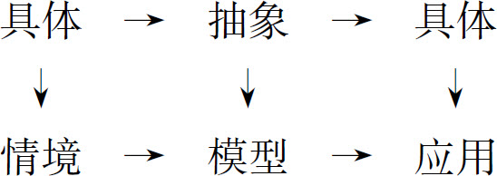
这里的模型是广义的，数学概念、法则、公式、数量关系、规律等都可以理解为模型。
根据笔者多年听课调研的情况看，在到处提倡情境的数学教育时代，抽象在小学数学教学中也往往容易被忽略。因此，在小学数学的教学过程中，在注重操作、直观的同时，在符合学生认知特点的情况下，适时、适当地体现数学抽象的思想，对学生的抽象思维发展是有益的；而且抽象思维发展了，能够促进学生学好数学、用好数学，去解决更多的实际问题，这种做法符合《标准（2011版）》的理念。
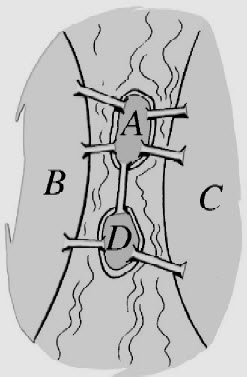
图2-1
案例： 18世纪，东普鲁士的首府哥尼斯堡城有一条河穿城而过，河中心有两个岛，共有七座桥，如图2-1。问题是：一个人如何能够不重复、不遗漏地一次走完这七座桥而返回原地？
很多散步的人进行了尝试，但都没有成功，这就是著名的哥尼斯堡七桥问题。瑞士著名的数学家欧拉通过数学抽象的方法解决了这个著名的问题。
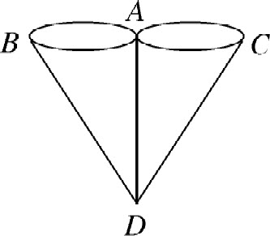
图2-2
这个问题好像是几何的问题，但又与传统几何研究图形的形状和大小没有什么关系，也就是说，这个问题并不关心陆地、岛屿、桥梁的大小。因此，可以把陆地和岛屿抽象成没有大小的数学上的点，把七座桥抽象成没有宽窄的数学上的线。这样就把地理上的地图抽象成了数学上的几何图，把原来能否不重复、不遗漏走路的问题抽象成能否一笔（不重复地）画出这个图形（如图2-2）的问题。
能够一笔画的图形的特征分析：这样的图形一般有一个起点和一个终点，特殊情况当终点也是起点时这两点也就重合了；除了这两点外，图形中的其他点所连接的线都应该是若干对一进一出的偶数条，这样的点称为偶点，否则就称为奇点。举一个通俗的例子，假设你某天上班离开家，下班回到家，即终点与起点相同；在这一天的出行路线中，不管你去了任何地点，如办公室、车站、食堂、银行、邮局等，对每个点来说都是一对或者若干对一进一出；这样的路线图中与每个点的连线都是偶数条。如果你是上班离开自己家，下班去父母家，那么起点与终点是奇点，其他点必定是偶点。也就是说，能够不重复地一笔画的图形，只有起点和终点可以是奇点；即能够不重复地一笔画的图形中，奇点个数只能是0或2；由此得出，只有当图形中的奇点个数是0或2时，这样的图形才能够不重复地一笔画出。
上述图形中有4个奇点，因此不是一笔画图形。所以人们怎么走也不可能一次不重复、不遗漏地走完七座桥。
数学符号是数学的语言，数学世界是一个符号化的世界，数学作为人们进行表示、计算、推理和解决问题的工具，符号起到了非常重要的作用；因为数学有了符号，才使得数学具有简明、抽象、清晰、准确等特点，同时也促进了数学的普及和发展；国际通用的数学符号的使用，使数学成为国际化的语言。符号表示也是一种数学抽象，数学符号是抽象的结果，学生在学习数学的过程中，用符号去表示、推理及运算等是数学思考的重要形式，也使结论更具有一般性。
《标准（2011版）》解读认为：“符号是数学的语言，也是数学的工具，更是数学的方法。”也就是说，用符号表示既是一种数学思想，也是一种数学方法。
数学符号是人们在研究现实世界的数量关系和空间形式的过程中产生的，它来源于生活，但并不是生活中真实的物质存在，而是一种抽象概括。如数字1，它可以表示现实生活中任何数量是一个的物体的个数，是一种高度的抽象概括，具有一定的抽象性。一个数学符号一旦产生并被广泛应用，它就具有明确的含义，就能够进行精确的数学运算和推理证明，因而它具有精确性。数学能够帮助人们完成大量的运算和推理证明，但如果没有简洁的思想和符号的参与，它的工作量及难度也是很大的，让人望而生畏。一旦简洁的符号参与了运算和推理证明，数学的简洁性就体现出来了。如欧洲人12世纪以前基本上用罗马数字进行计数和运算，由于这种计数法不是位值制的，大数的四则运算非常复杂，严重阻碍了数学的发展和普及。直到12世纪印度数字及十进制计数法传入欧洲，才使得算术有了较快的发展和普及。数学符号的发展也经历了从各自独立到逐步规范、统一和国际化的过程，最明显的就是早期的数字符号从各自独立的埃及数字、巴比伦数字、中国数字、印度数字和罗马数字到统一的阿拉伯数字。数学符号经历了从发明到应用再到统一的逐步完善的过程，并促进了数学的发展；反之，数学的发展也促进了符号的发展。因而，数学和符号是相互促进发展的，而且这种发展可能是一个漫长的过程。
《标准（2011版）》把符号意识作为课程内容的十大核心概念之一，由此可见符号意识的重要性。可以从以下几点来理解符号意识。
小学数学常用的符号主要可以分为以下几类：
数量符号：0～9，未知常量（a，b，c 等），变量（x，y，z 等），圆周率π。
运算符号：加号（＋），减号（-），乘号（×或•），除号（÷），乘方（2×2＝22 ，2×2×2＝23 ），比号（：）。
关系符号：等号（＝），近似符号（≈），不等号（≠），大于号（＞），小于号（＜），平行符号（∥），垂直符号（⊥）。
结合符号：如小括号“（）”，中括号“［］”，分数线“—”。
性质符号：如正号“＋”，负号“-”。
省略符号：三角形（△），角（
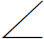
）。这是一个从具体到抽象、从特殊到一般的探索和归纳的过程。如通过几组具体的两个数相加，交换加数的位置和不变，归纳出加法交换律，并用符号表示：a ＋b ＝b ＋a 。再如在长方形上拼摆单位面积的小正方形，探索并归纳出长方形的面积公式，并用符号表示：S ＝ab 。这是一个符号化的过程，同时也是一个模型化的过程。
这一要求是学生具有符号意识的很重要的体现，虽然学生在学习数学的过程中时刻与符号打交道，但是学生（包括部分教师）往往并不关心符号的作用和价值，只关心具体的知识点，而缺乏抽象上升到一般性结论的意识。而这种意识和方法恰恰是把握数学本质、把数学课本由厚变薄的重要方法。如学生知道正方形的边长乘4等于它的周长，边长乘边长等于它的面积；更进一步，如果假设任何一个正方形的边长是a ，那么4a 就等于该正方形的周长，a 2 就等于该正方形的面积。这是一个符号化和模型化的过程，同时能够体会这一结论的一般性。
数学的发展经历了几千年，数学符号的规范和统一也经历了比较漫长的过程。如我们现在通用的算术中的十进制计数符号数字0～9于公元8世纪在印度产生，经过了几百年才在全世界通用，从通用至今也不过几百年。代数在早期主要是以文字为主的演算，直到16、17世纪韦达、笛卡尔和莱布尼兹等数学家逐步引进和完善了代数的符号体系。
符号在小学数学中的应用如表2-1所示。
表2-1
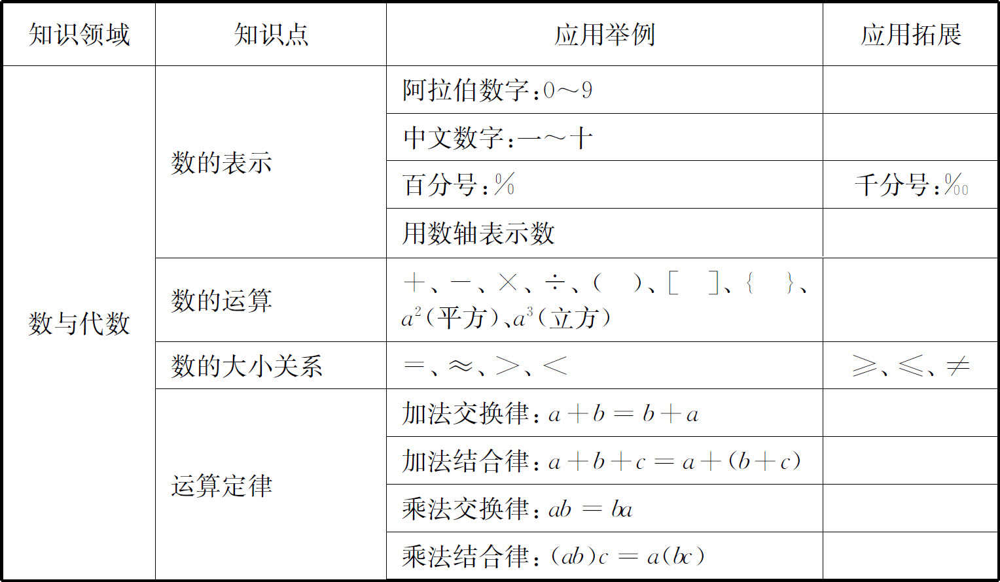
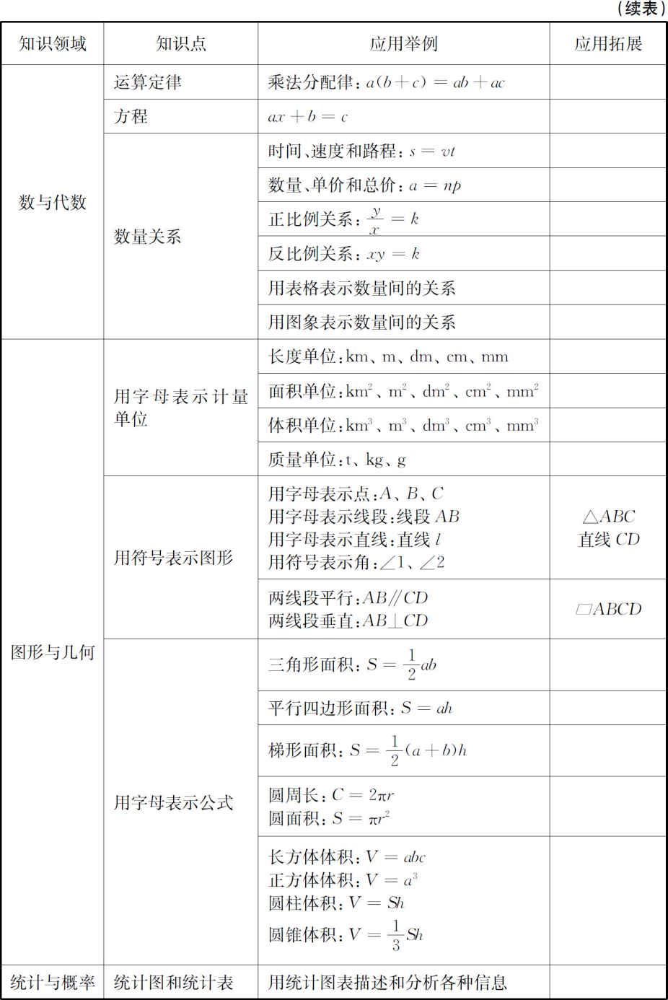
《标准（2011版）》把培养学生的符号意识作为必学的内容，并提出了具体要求，足以证明它的重要性。教师在日常教学中要给予足够的重视，并落实到课堂教学目标中。要创设合适的情境，引导学生在探索中归纳和理解数学符号所表达的数学信息，并进行解释和应用。学生只有理解和掌握了数学符号的内涵和思想，才有可能利用它们进行正确的运算、推理和解决问题。
数学的概念、公式、法则、性质等都是数学知识的重要组成部分，往往又都需要用符号进行表达，因此要结合各种知识的学习进行符号意识的培养。如小学生学习加法的概念，主要是用语言描述的，一年级时学生直观感受加法是把两个数合并成一个数，四年级时学生能够理解把两个数合并成一个数的运算，就是加法；六年级时学生能够用字母表示四则运算，如a ＋b ＝c 。
符号意识的培养应贯穿于数学学习的整个过程，包括学生经历的发现问题、提出问题、分析问题和解决问题的各个过程，而不是让学生简单地记忆和模仿。如加法交换律的教学，不应简单地通过几个特殊的例子告诉学生交换两个加数的位置和不变；而应该让学生经历探索规律的全过程。如让学生计算几道交换加数的加法题，引导学生能够发现和提出什么问题，再进行归纳和概括，并用一种简洁的方式表示出来，启发学生得出可以用a ＋b ＝b ＋a 来表示加法交换律，并理解这一表示具有一般性。
小学生经过了近6年的学习，已经初步有了符号意识及用符号表示常用的数、数量关系、公式的能力。小学数学可以用符号表示的数、数量关系、法则、性质、规律等有很多，由于其中有些知识是在低年级和中年级学习的，限于当时学生的知识水平、思维水平，当时没有能够用符号表示这些知识。那么到了高年级及六年级总复习阶段，学生已经学完了小学数学的所有知识，思维已经以抽象逻辑思维为主，具备了用符号表示更多的数、数量关系、法则、性质、规律等的条件。可以在复习中进一步把所学知识结构化、系统化、抽象化、符号化，为中学数学的学习打下良好基础。如学生学习了正比例的意义后，判断正方形的周长与边长是否成正比例时，绝大多数学生会采取举例验证的方法，而很少想到用C ＝4a ，只要与正比例关系式y ＝kx 是同类的关系式，即两个变量，其中一个变量与一个常数的积等于另一个变量，那么两个量就成正比例。
案例1： 如果用
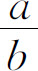
和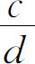
分别表示两个异分母分数，请表示这两个分数的加法和减法计算法则。分析： 我们先考虑b 和d 是互质数的情况，可以直接把b 和d 相乘的积bd 作公分母，
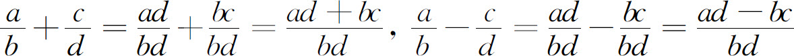
。如果b 和d 不是互质数，一般用b 和d 的最小公倍数作公分母，因比较复杂，不适合小学生学习，就不作推导。案例2： 计算，
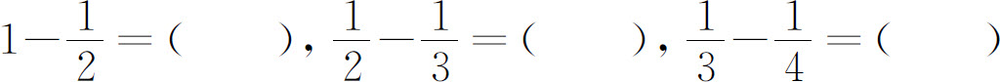
，你能发现什么规律？如果用an 表示第n 个算式，请把这个规律表示出来。分析： 本题是人教版教材五年级下册中的习题，归纳规律并不难，难的是学会用字母表示规律。观察每个式子，可以发现第几个式子的被减数的分母就是几，减数的分母比被减数的分母大1。那么第n 个式子的被减数的分母就是n ，减数的分母就是n ＋1，所以
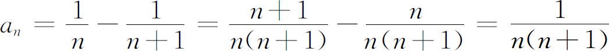
。人们面对比较复杂的问题，有时无法通过统一研究或者整体研究解决，需要把研究的对象按照一定的标准进行分类并逐类进行讨论，再把每一类的结论综合，使问题得到解决，这种解决问题的思想方法就是分类讨论的思想方法。其实质是把问题“分而治之、各个击破、综合归纳”。其分类规则和解决问题步骤是：（1）根据研究的需要确定同一分类标准；（2）恰当地对研究对象进行分类，分类后的所有子项之间既不能“交叉”也不能“从属”，而且所有子项的外延之和必须与被分类的对象的外延相等，通俗地说就是要做到“既不重复又不遗漏”；（3）逐类逐级进行讨论；（4）综合概括、归纳得出最后结论。
分类讨论既是解决问题的一般的思想方法，适用于各种科学的研究；同时也是数学领域解决问题较常用的思想方法。
《标准（2011版）》在总目标中要求学生能够运用数学的思维方式进行思考，数学思考的部分特征就包括有顺序地、有层次地、全面地、有逻辑性地思考，分类讨论就是具有这些特性的思考方法。因此，分类讨论思想是培养学生有条理地思考和良好数学思维品质的一种重要而有效的方法。无论是解决纯数学问题，还是解决联系实际的问题，都要注意数学原理、公式和方法在一般条件下的适用性和特殊情况下的不适用性，注意分类讨论，从而做到全面地思考和解决问题。
从知识的角度而言，把知识从宏观到微观不断地分类学习，既可以把握全局、又能够由表及里、细致入微，有利于形成比较系统的数学知识结构和构建良好的认知结构。分类讨论思想与集合思想也有比较密切的联系，知识的分类无时不渗透着集合的思想，集合思想也离不开分类，一个元素是否属于一个集合，标准是明确的。另外，分类讨论思想还是概率与统计知识的重要基础。
分类思想在小学数学的学习中有很多应用，例如从宏观的方面而言，小学数学可以分为数与代数、图形与几何、统计与概率、综合与实践四大领域。从比较具体的知识来说，几大领域的知识又有很多分支，例如小学数学中负数成为必学的内容以后，小学数学数的认识范围实际上是在有理数范围内，有理数可以分为整数和分数，整数又可以分为正整数、零和负整数，整数根据它的整除性又可以分为偶数和奇数。正整数又可以分为1、素数和合数。分类思想不但有利于理解各种知识及相互间的关系，还是解决问题时非常有效的方法，如小学生解决简单的排列组合问题时，不能利用加法和乘法原理，但是可以用分类讨论的方法、穷举法、数形结合法等方法有效地解决。
小学数学中分类思想的应用如表2-2所示。
表2-2
| 思想方法 | 知识点 | 应用举例 |
| 分类思想 | 分类 | 一年级下册物体的分类整理，渗透分类思想 |
| 数的认识 | 数可以分为正数、0、负数 有理数可以分为整数和分数 分数可以分为真分数和假分数 |
|
| 整数的性质 | 整数可以分为奇数和偶数 正整数可以分为1、素数和合数 |
|
| 图形的认识 | 平面图形中的多边形可以分为：三角形、四边形、五边形、六边形、…… | |
| 三角形按角可以分为：锐角三角形、直角三角形、钝角三角形 三角形按边可以分为：不等边三角形、等腰三角形，其中等腰三角形又可以分为等边三角形、腰与底边不相等的等腰三角形 |
||
| 四边形按对边是否平行可以分为：平行四边形、梯形和两组对边都不平行的四边形 | ||
| 统计 | 数据的分类整理和描述 | |
| 排列组合 | 分类讨论是小学生了解排列组合思想的基础 | |
| 概率 | 排列组合是概率计算的基础 | |
| 植树问题 | 先确定是几排树，再确定每排树的情况：两端都不栽、一端栽一端不栽、两端都栽 | |
| 抽屉原理 | 构建抽屉实际上是应用分类标准，把所有元素进行分类 |
分类思想在小学数学中还有可以挖掘的素材，如有些老师在教学正比例和反比例的意义时，先给出一些语句，让学生判断哪些量是相关联的量，哪些量不是；然后引导学生对相关联的各组量进行分类，发现每组都有两个变量，可以分成4类：两个量的比值一定，两个量的积一定，两个量的和一定，两个量的差一定。在此基础上引出正比例关系和反比例关系。
如前所述，分类讨论思想在小学数学中占有比较重要的地位，而且应用比较广泛。在教学中应注意以下几点。
第一，在分类与整理单元的教学中，注意渗透分类思想，知道统计数据时经常要对统计的事物进行分类，如把气球按颜色分类，把人按照性别分类等。
第二，在三大领域知识的教学中注意经常性地渗透分类思想和集合思想，如平面图形和立体图形的分类、数的分类等。
第三，注意从数学思维和解决问题的方法上渗透分类思想，如排列组合、抽屉原理等问题经常运用分类讨论思想解决。
第四，在统计知识的教学中，体现分类的思想。现实生活中的数据丰富多彩，很多时候需要把收集到的数据进行分类整理和描述，从而有利于分析数据和综合地作出推断。
第五，注意让学生体会分类的目的和作用，不要为了分类而分类。如对商品和物品的分类是为了便于管理和选购，对数学知识和方法进行分类，是为了更深入地研究问题、理解知识、优化解决问题的方法。
第六，注意有关数学规律在一般条件下的适用性和特殊条件下的不适用性。也就是说，有些数学规律在一般情况下成立，在特殊情况下不一定成立；而这种特殊性在小学数学里往往被忽略，长此以往，容易造成学生思维的片面性。如在小学里经常有争议的判断题：如果5a ＝2b ，那么a ：b ＝2：5；有人认为是对的，有人认为是错的。严格来说，这道题是错的，因为这里并没有规定a 和b 不等于0。之所以产生分歧，是因为在小学数学里有一个不成文的约定：在讨论整数的性质时，一般情况下不包括0。这种约定是为了避免麻烦，有一定道理；但是这样就造成了在解决有关问题时产生分歧，而且不利于培养学生思维的严密性，尤其是学生进入初中后的学习中，经常会因为解决问题不全面、忽略特殊情况而出现低级错误。
案例1 把1张一角的人民币换成零钱，现有足够的1、2、5分币。共有多少种换法？
分析 方法可有多种，一种方法是可以按只有一种、二种、三种分币的标准进行分类组合。
| 只有一种分币： | 10个1分，5个2分，2个5分，3种换法； |
| 只有两种分币： | 8个1分和1个2分，6个1分和2个2分， 4个1分和3个2分，2个1分和4个2分， 5个1分和1个5分，5种换法； |
| 只有三种分币： | 1个1分、2个2分和1个5分， 3个1分、1个2分和1个5分，2种换法。 |
共计10种换法。
案例2 图2-3中共有多少个长方形？
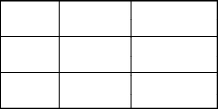
图2-3
分析 此题可分类计数，分以下几类：
单一的长方形：3×3＝9；
由两个单一长方形组成的长方形：横数2×3＝6，竖数2×3＝6，6＋6＝12；
由三个单一长方形组成的长方形：横数1×3＝3，竖数1×3＝3，3＋3＝6；
由四个单一长方形组成的长方形：4；
由六个单一长方形组成的长方形：4；
由九个单一长方形组成的长方形：1。
共计9＋12＋6＋4＋4＋1＝36（个）。
这种方法虽然繁琐，但是学生容易理解。
案例3 图2-4中共有多少个三角形？
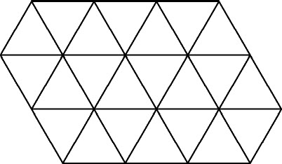
图2-4
分析 此题如果直接数，很容易数错。
设最小的三角形面积为1，则：
面积为1的三角形有22个；
面积为4的三角形有10个；
面积为9的三角形有2个。
因此共有34个三角形。
案例4 任意给出4个两两不等的整数，请说明：其中必有两个数的差是3的倍数。
分析 任意一个整数除以3，余数只有三种可能：0，1和2。运用分类思想，构造这样的三个抽屉：除以3余数分别是0，1和2的整数。根据抽屉原理，必有一个抽屉里至少放了两个数，这两个数除以3的余数相等，设这两个数分别为3m ＋r 和3n ＋r （m 、n 都是整数），它们的差是3（m -n ），必是3的倍数。
把指定的具有某种性质的事物看作一个整体，就是一个集合（简称集），其中每个事物叫做该集合的元素（简称元）。指定的具有某种性质，是指我们有一定的规则或标准判断任何一个事物是否属于该集合，即给定的集合，它的元素必须是确定的，即任何一个事物是否属于这个集合，是能够确定的。如“学习成绩好的同学”不能构成一个集合，因为判断成绩好与不好的标准是模糊的，构成它的元素是不确定的；而“语文和数学的平均成绩在90分及以上的同学”就是一个集合，如小明的语文和数学的平均成绩是90分，那么小明就属于这个集合，小红的语文和数学的平均成绩是89分，那么小红就不属于这个集合。一个给定集合中的元素是互不相同的，即集合中的元素不重复出现；如不能把集合A ＝｛2，4，6，8｝写成A ＝｛2，4，6，8，8｝，说A 有5个元素也是不对的，实际上A 只有4个元素。只要两个集合的元素完全相同，就说这两个集合相等；如集合
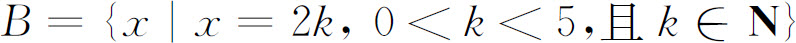
，那么A ＝B 。集合的表示法一般用列举法和描述法。列举法就是把集合的元素一一列举出来，并用大括号“｛｝”括起来表示集合的方法。如上述集合A 就是用列举法表示的。描述法就是在大括号内写出规定这个集合元素的特定性质来表示集合的方法。如上述的集合B 就是用描述法表示的。列举法的局限性在于当集合的元素过多或者有无限多个时，很难把所有的元素一一列举出来，这时描述法便体现出了优越性。此外，有时也可以用封闭的曲线（文氏图）来直观地表示集合及集合间的关系，曲线的内部表示集合的所有元素。如下面的文氏图（图2-5）表示四边形的分类及相互关系。
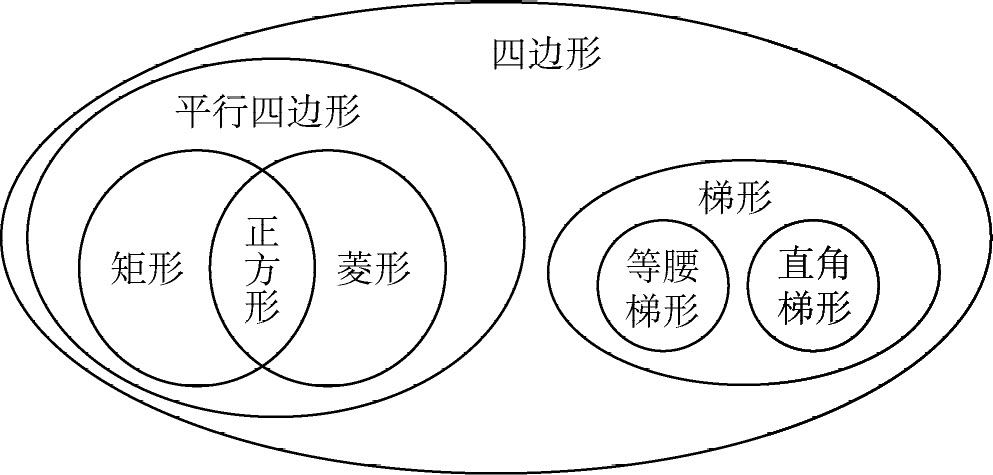
图2-5
一一对应是两个集合之间元素（这种元素不一定是数）的一对一的对应，也就是说给定两个集合A 、B ，如果集合A 中的任一元素a ，在集合B 中都有唯一的元素b 与之对应；并且在集合B 中的任一元素b ，在集合A 中也有唯一的元素a 与之对应。数集之间可以建立一一对应，如正奇数集合和正偶数集合之间的元素可以建立一一对应。其他集合之间也可以建立一一对应，如五（1）班有25个男生，25个女生，如果把男生和女生各自看成一个集合，那么这两个集合之间可以建立一一对应；再如，中国、美国、俄罗斯、英国、法国、德国作为一个集合，北京、华盛顿、莫斯科、伦敦、巴黎、柏林作为一个集合，这两个集合之间也可以建立一一对应。
如果一个集合的元素个数是有限的，那么这个集合就是有限集合；如果一个集合的元素个数是无限的，那么这个集合就是无限集合。当一个集合的元素能与全体正整数成一一对应关系时，那么这个集合就是可数集合；也就是说可以把可数集合的元素按照1，2，3，…编号，可以一个一个地数出来。如全体正奇数的集合是可数集合，第1个元素是1，第2个元素是3，第3个元素是5，…当然，给集合的元素编号，是为了方便考查集合元素的特点，并不是说集合的元素与顺序有关；集合的元素与顺序是无关的，如集合C ＝｛1，2，3｝＝｛3，2，1｝＝｛2，1，3｝＝｛3，1，2｝。
设有A 、B 两个集合，如果A 的所有元素都是B 的元素，则称A 是B 的子集，记为
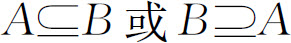
，称为A 包含于B 或B 包含A 。集合理论是数学的理论基础，从集合论的角度研究数学，便于从整体和部分及二者的关系上研究数学各个领域的知识。如数系的扩展，从小学的自然数到整数、分数，再到中学的有理数、无理数和实数，都可以从集合的角度来描述。有时用集合语言来表述有关概念更为简洁，如全体偶数的集合可表示为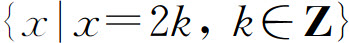
。集合沟通了代数（数）和几何之间的关系，如y ＝kx ，既是正比例函数，又可以表示一条直线；也就是说在平面直角坐标系上，这条直线是由满足y ＝kx 的有序实数对所组成的点的集合。用文氏图描述概念的分类及概念之间的关系，往往层次分明、直观清晰，如图2-5可表示四边形的分类。不含任何元素的集合叫做空集，常用符号
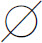
表示。空集 是任何集合A
的子集，即
是任何集合A
的子集，即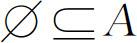
。如六年级某次数学考试的成绩分布在70分到99分之间，那么该次考试成绩是100分的学生组成的集合就是空集。空集是指一个元素也没有的集合，与集合D ＝｛0｝不是一个概念，集合D 有一个元素，这个元素是0。集合思想在小学数学的很多内容中进行了渗透。在数的概念方面，如自然数可以从对等集合基数（元素的个数）的角度来理解，再如在一年级通过两组数量相等的实物建立一一对应，让学生理解“同样多”的概念，实际上就是在两个对等集合的元素之间建立一一对应；数的运算也可以从集合的角度来理解，如加法可以理解为两个交集为空集的集合的并集，再如求两数相差多少，通过把代表两数的实物图或直观图一对一地比较，来帮助学生理解用减法计算的道理。实际上就是把代表两数的实物分别看作集合A 、B ，通过把A 的所有元素与B 的部分元素建立一一对应，然后转化为求B 与其子集（与A 等基）的差集的基数。此外，在小学数学中还经常用文氏图表示概念之间的关系，如把所有三角形作为一个整体，看作一个集合，记为A ；把锐角三角形、直角三角形和钝角三角形各自看作一个集合，分别记为B 、C 、D ，这三个集合就是集合A 的三个互不相交的子集，B 、C 、D 的并集就是A 。再如在学习公因数和公倍数时，都是通过把两个数各自的因数和倍数分别用文氏图表示，再求两个集合的交集，直观地表示了公因数和公倍数的概念。
集合思想在小学数学中广泛渗透，在教学中应注意以下几个问题。
第一，应正确理解有关概念。我们知道，两个数之间可以比较大小，但是两个集合之间无法直接比较大小，也就是说一般不说两个集合谁大谁小。如有两个集合A 、B ，当且仅当它们有完全相同的元素时，称A 、B 相等，记为A ＝B 。如A ＝｛2，3，5，7｝，B ＝｛x ｜x 是小于10的素数｝。集合之间可以有包含关系，如C ＝｛2，3，5，7，11｝，则A 是C 的真子集。有限集合之间可以比较基数的大小，也就是比较元素的个数的多少。只要两个集合元素间能够建立一一对应的关系，那么就说两个集合的元素个数相等，就是基数相等，即等势或等基。A 是C 的真子集，就说A 的基数小于C 的基数。
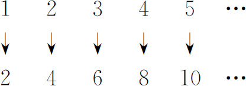
图2-6
对于有限集比较容易数出它的元素的个数，而对于无限集，又怎样比较它们元素个数的多少呢？如正整数集合与正偶数集合，它们的基数相等吗？我们知道，两个集合的元素，只要能够建立一一对应就基数相等。正整数集合与正偶数集合的元素之间可以建立如图2-6所示的一一对应关系。
因此，这两个集合的元素个数相等，也就是它们的基数相等。
第二，正确把握集合思想的教学要求。集合思想虽然在小学数学中广泛渗透，但是集合的知识并不是小学数学的必学内容；因而应注意把握好知识的难度和要求，尽量使用通俗易懂的语言渗透集合思想。文氏图除了可以表示概念系统及概念间的关系外，利用文氏图进行集合的直观运算，还可以解决一些分类计数的问题。
第三，集合思想的教学要贯彻小学数学的始终。如上所述，集合思想在一年级学习之初，学生在学习认数和分类等知识中就已经有所接触，一直到高年级学习公因数和公倍数、三角形和四边形的分类、数的分类（正数、0、负数）、六年级（下）总复习中对各领域知识的系统整理和复习等等，不同年级和不同知识领域都有所渗透。这里涉及了用集合语言表示概念及概念间的关系、集合的元素之间的对应关系、集合的运算等等。因此，集合思想的渗透不是一朝一夕的事情，而是坚持不懈的长期的过程。
案例 六（1）班有36名学生，在举办的文艺活动中，表演歌舞节目的有9人，表演小品等节目的有12人，两类节目都表演的有5人。该班有多少人没参加节目表演？
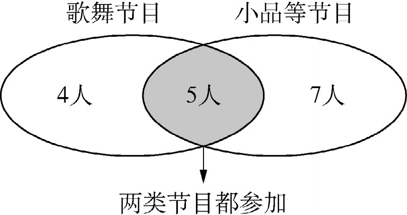
图2-7
分析 为了便于理解集合的运算原理，我们借助文氏图（图2-7）来分析。左边的圈里表示表演歌舞节目的人，右边圈里表示表演小品等节目的人。两个圈相交的共有的部分有5人，表示这5人既参加了歌舞节目，又参加了小品等节目的表演。左边圈中没跟另一个圈相交的单独部分有4人，表示这4人只参加了歌舞节目的表演。因此，参加歌舞节目表演的9人由两部分组成：一部分是只参加歌舞节目表演的4人，另一部分是既参加歌舞节目又参加小品等节目表演的5人。同样道理，参加小品等节目表演的12人由两部分组成：一部分是只参加小品等节目表演的7人，另一部分是既参加小品等节目又参加歌舞节目表演的5人。综合以上分析，可以得出：该班参加节目表演的人数是4＋5＋7＝16，或9＋12-5＝16。那么没参加节目表演的人数是：36-16＝20。
在学习数学或用数学解决问题的过程中，会面对千变万化的对象，在这些变化中找到不变的性质和规律，发现数学的本质，这就是变中有不变的思想。所谓“万变不离其宗”，恰当通俗地概括了这个思想。如除法、分数和比表面上有很大不同，除法是一种运算，分数是一种数，比表示一种关系。实际在本质上它们有一致的一面，都可以表示两个数之间的关系。
小学数学虽然只是数学中最基础、最简单的部分，从容量和难度来看都不算大，但是对于小学生来说却是有难度的，这是由小学生的认知特点决定的，所以小学数学教材的编排是分散式的、螺旋式的、直观的、逐步抽象的。如整数的认识分散在1～4年级、分成5段编排。这可能导致学生对数学的概念、性质、法则等数学知识的理解是肤浅的、割裂的、片面的。在教材编排和课堂教学中，如果能够多体现变中有不变的思想，将有利于更好地认识数学的本质和解决问题。
数学的概念、法则、性质、定律、数量关系式（包括各种公式）等，都可以广泛应用变中有不变的思想。
整数的认识，无论一个整数有多大，本质上都是利用十进位值制计数原理计数，利用0～9这10个数字，放在不同的数位上表示不同的大小。更进一步，小数的表示也是整数的十进制计数法的扩展。小数与分数、分数与百分数也有密切的联系。
运算律是从整数开始归纳的，在此基础上可以扩展到小数、分数、有理数、实数，即在实数范围内，运算律的适用性是不变的。
解决问题的情境和信息是丰富多彩、变化多端的，如果能够抓住数学模型不变的本质，可以避免被表面复杂的情境所迷惑，如单价×数量＝总价作为描述商品价格的数量关系，无论是什么情境、什么商品和数据，都可以应用这一基本模型一步一步地分析解决。
数学教学，无论是让学生获得知识技能，还是掌握思想方法，都需要学生透过情境、信息等现象去抓住数学中不变的本质。在当今大力提倡课程改革的时代，这仍然是数学教学的核心；即便是学生自主学习的主体性教学模式，也不能脱离这个核心。透过现象看本质，是很多数学思想方法所主张的，包括抽象思想、模型思想、变中有不变的思想等。因此，要重视这一思想的渗透。
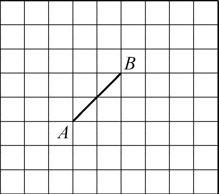
图2-8
案例1 图2-8中每个小正方形方格的面积是1cm2 。以给定的线段A B 为边，你能分别画出几个符合下列要求的多边形？
（1）面积是3cm2 的三角形；
（2）面积是6cm2 的平行四边形；
（3）面积是7cm2 的梯形。
分析 这是一道开放题，题目要求三角形的面积始终是3cm2 ，即
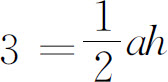
，可得ah ＝6，只要底与高的积等于6即可，理论上可以画出无数个。同理，平行四边形只要满足底与高的积等于6即可；梯形只要满足（a ＋b ）h ＝14，可以考虑一种特殊情况，h ＝2，a ＋b ＝7。部分答案如图2-9。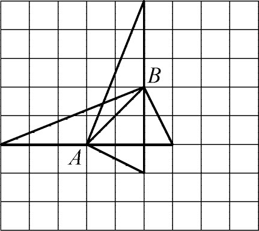 |
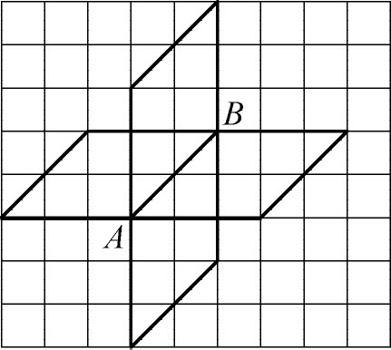 |
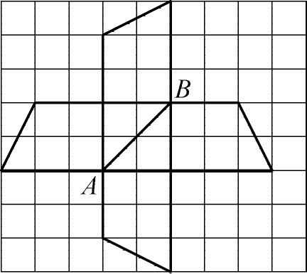 |
图2-9
案例2 如图2-10，三角形的外角和是多少度？四边形的外角和是多少度？五边形的外角和是多少度？任意一个多边形的外角和是多少度？
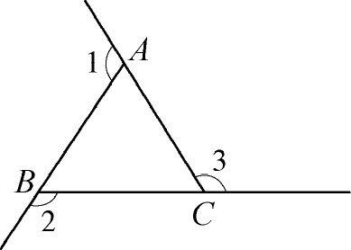 |
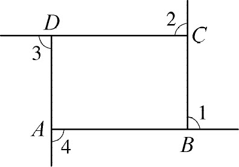 |
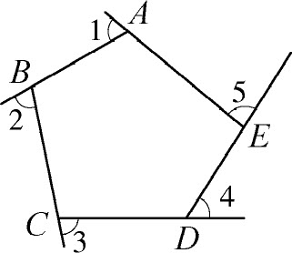 |
| （a） | （b） | （c） |
图2-10
角可以从两个角度来理解，一个是从静态的角度来定义，具有公共端点的两条射线组成的图形叫做角。这个公共端点叫做角的顶点，这两条射线叫做角的两条边。另一个是从动态的角度来定义，一条射线绕着它的端点从一个位置旋转到另一个位置所形成的图形叫做角。所旋转射线的端点叫做角的顶点，开始位置的射线叫做角的始边，终止位置的射线叫做角的终边。
第二种定义，可以把角理解为方向改变的大小，因为射线是有方向的，一条射线从始边旋转一个角度形成终边，意味着终边与始边相比较，方向改变了相应的度数。如以某点为参照点，东偏北30。的方向，就可以理解为终边（朝东北）与始边（朝东）的夹角为30°。再如我们在日常生活中，在马路上向东走，走到一个十字路口向北拐弯，实际上就是方向改变了（旋转了）90°。
分析 我们先从一个特殊的四边形——长方形开始，从第二种角的定义来分析，在图2-10（b）中我们假设从点A 向B 走是向东走，到了B 向上拐走向C 是向北，方向改变了90°，依此类推，再经过C 点、D 点、回到A 点出发的方向。总计改变了4个90°，即360°，实际上是一个圆周的度数，即周角。也就是说，长方形的外角和是360°。同理，沿着任意一个多边形走一周，旋转的角度都是360°，即多边形的外角和是360°。
我们再从推理的角度来分析，已经知道任意一个三角形的内角和是180°，即∠C A B ＋∠A B C ＋∠B C A ＝180°。从图2-10（a）中可以看出，任何一个多边形的一个内角与它的外角和也是180°，可得∠C A B ＋∠1＝180°，∠A B C ＋∠2＝180°，∠B C A ＋∠3＝180°，即∠C A B ＋∠1＋∠A B C ＋∠2＋∠B C A ＋∠3＝540°，∠C A B ＋∠A B C ＋∠B C A ＋∠1＋∠2＋∠3＝540°，所以∠1＋∠2＋∠3＝360°。
同理可推出四边形的外角和∠1＋∠2＋∠3＋∠4＝360°，五边形的外角和∠1＋∠2＋∠3＋∠4＋∠5＝360°。由此可归纳一般规律：任意多边形的外角和都是360°。
在学习数学和解决问题的过程中，会遇到两种特殊情况：一是所研究的对象是无限的，如分数的个数是无限的，分数加法算式的个数也是无限的，在研究分数加法的算法时不可能研究所有算式，而是选取几个有代表性的例子，通过计算归纳算法，采取了通过对有限的研究来解决无限的问题。二是所研究的对象是有限的，如圆的面积，只要给定了一个半径为定长的圆，无论这个圆的半径有多大，它的面积总是有限的，在推导面积公式的过程中，通过把圆划分成无限个全等的扇形，用这些扇形拼成一个近似的长方形，转化成长方形来计算面积，从而得出圆面积计算公式，将有限问题转化为无限问题来解决。
如上所述，将无限的问题转化为有限来求解或将有限的问题转化为无限来解决，就是有限与无限的思想。另外，有限中有无限、无限中有有限，也是有限与无限的思想。如锐角的大小是有限的，但是它们的个数是无限的；任意给定一个非0自然数，它的因数的个数是有限的，而它的倍数的个数是无限的。
有限与无限的思想体现了对立统一的辩证关系，它既是解决各种问题的有效方法，也是培养辩证思维能力的重要手段。因此，让小学生了解一些有限与无限的思想，不但有利于培养思维能力和解决问题的能力，而且有助于中小学数学的衔接。
有限与无限的思想在小学数学中也有较多的渗透。
在数的认识中体会有限与无限的思想。小学生从一年级开始就认识自然数0，1，2，3，…同时知道每个自然数加1就等于它的后继数。到了认识亿以内的数时，进一步知道了最小的自然数是0，没有最大的自然数，自然数的个数是无限的。也就是说，任意给定一个足够大的自然数N ，只需要把它加1就会得到一个更大的自然数N ＋1，N ＋1＞N ，所以总是找不到一个最大的自然数，从而体会到自然数数列的无限多和趋向无穷大。由此可以推广到奇数、偶数、一个数的倍数、两个数的公倍数等都没有最大的，都有无限多个。而一个数的因数、两个数的公因数都是有限的。在学习分数的基本性质时，学生知道分母不同、分数值相等的分数有无限多个。在学习小数时，首先认识的是有限小数，然后认识无限循环小数，还知道圆周率是无限不循环小数。任意给定一个无限小数，它的大小是有限的，但是它的小数位数是无限的。
在认识图形时渗透有限与无限的思想。与自然数数列的趋向于无穷大类似，有些图形也具有无限长的特性，如直线、射线、角的边、平行线等，都具有无限延伸的特性，可以渗透无限的思想。直角、平角、周角等只有一个度数，而锐角、钝角等的大小是有限的，但它们的个数是无限的，有无数个度数。
就数学思想方法的分类而言，并不像数学各个领域或者分支学科那样，有比较系统而严格的分类，甚至各种数学思想方法之间还有很多交叉，同一个数学知识有时可以用多种思想方法来解释。如化圆为方的问题，既可以用有限与无限思想来解释，也可以用极限思想来解释，这两个思想之间有密切的联系。再如很多数学模型，是用符号表示的，同时也是通过数学抽象得到的，因此，数学抽象、数学模型、符号化思想等之间也是有密切联系的。教师不必过多追求这些形式化的东西，而应把重点放在指导学生应用数学思想方法学习数学、解决问题、提高思维能力。
有限与无限思想的教学，不要求学生利用这一思想去解决问题，而重点在于让学生感受它的魅力，包括有限与无限的相互转化、对立统一的辩证关系等，为以后的数学学习打下初步的基础。
————————————————————
(1) 史宁中．数学思想概论（第1辑）．长春：东北师范大学出版社，2008．